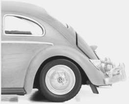

Equipado com motor refrigerado a ar, sistema elétrico de seis volts, câmbio seco de quatro marchas, que até então só se fabricavam carros com caixa de câmbio até 3 marchas.
Foi lançado em 1935, com todas exigências cumpridas. Podia ser comprado por quase todos, ao preço de 990 marcos.
